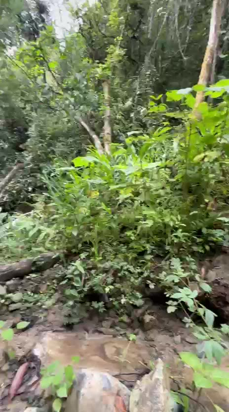
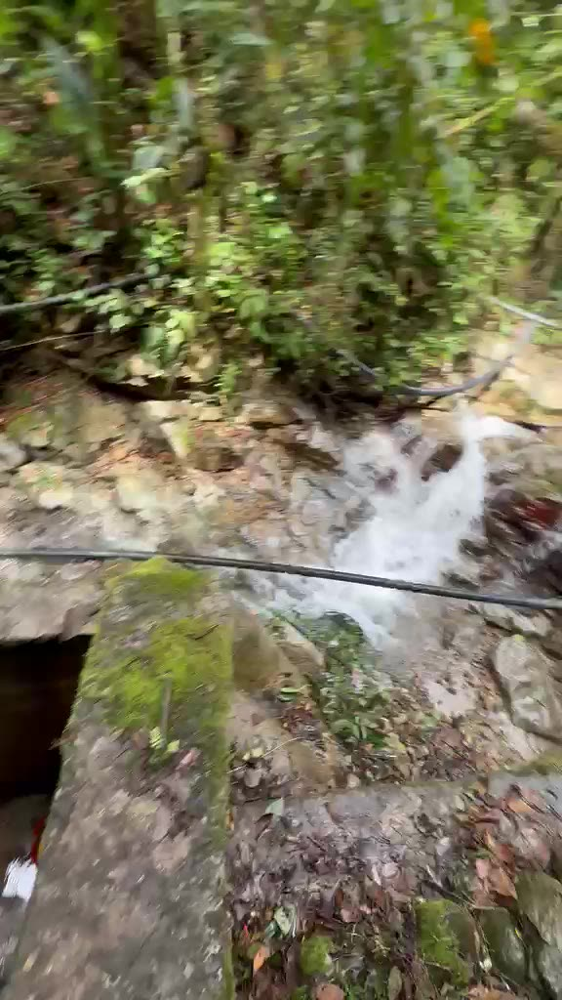
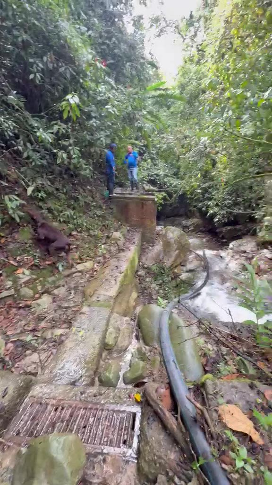
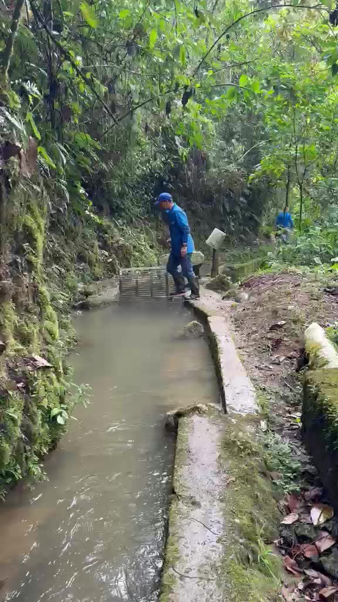
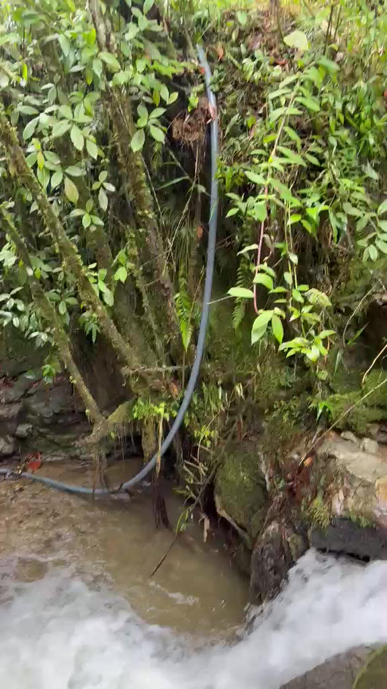
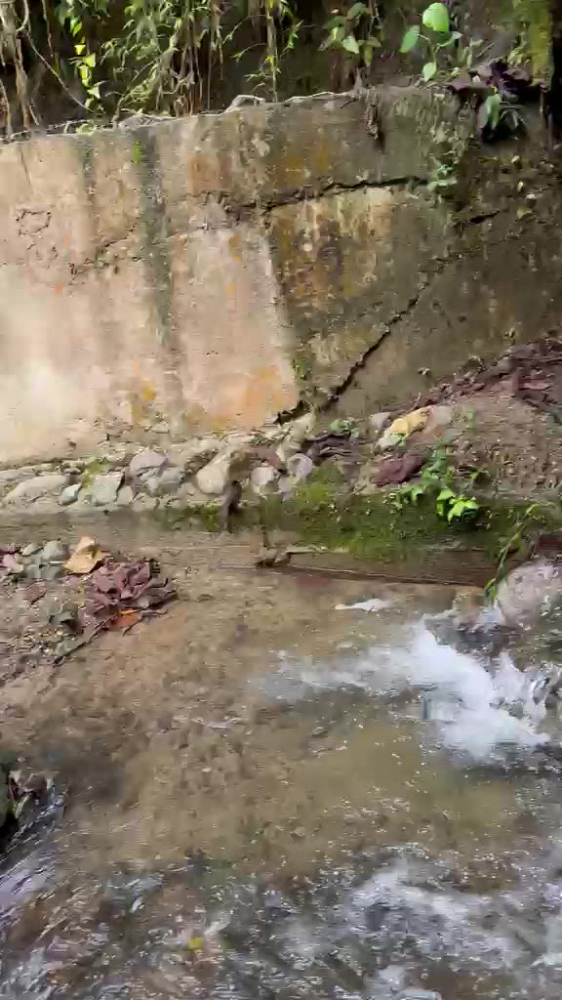

Acueducto veredal
Planta Miraflores
- Abastece
- [veredas / sectores]
- Familias
- [N]
- Fuente
- [quebrada]
Buen Vivir · Proyecto ambiental
El fenómeno de El Niño está secando las quebradas que alimentan las plantas Miraflores y Pueblo Viejo, los acueductos veredales que abastecen las veredas y el barrio La Tablaza.
Equipo: [Integrantes] · [Municipio] · 2026

1 Diagnóstico
Es un calentamiento anormal del océano Pacífico tropical que cambia el clima de medio mundo. En Colombia se traduce en menos lluvia y más calor.
El agua del océano sube de temperatura más de lo normal durante meses.
Llega menos humedad a las montañas de la región Andina.
Llueve menos, hace más calor y las fuentes de agua pierden caudal.
El Gobierno confirmó el inicio de El Niño en 2026.
de probabilidad de que continúe entre noviembre y enero.
de probabilidad de que llegue a intensidad muy fuerte, entre los más intensos desde 1950.
Fuente: Ministerio de Ambiente e IDEAM, junio de 2026.
Esquema ilustrativo, no son mediciones. Los datos reales de caudal van en los hallazgos.
Diagnóstico · El lugar
Una "planta" es un acueducto veredal que administra la propia comunidad. Sus tanques reciben el agua que baja de la montaña y la reparten a las casas.

El agua nace en la montaña y baja entre el bosque.

Una rejilla la recoge y un canal la conduce a la planta.

Los tanques la almacenan y la reparten a las viviendas.
Acueducto veredal
Acueducto veredal

Diagnóstico · Trabajo de campo
Caudal hoy: [__]. En época normal: [__].
Entra menos agua de la que la comunidad consume.
El servicio se interrumpe para recuperar nivel y repartir a todas las casas.
Captaciones que sacan agua directamente de la quebrada.
2 Programación
Objetivo general
Reducir el impacto de la sequía en las plantas Miraflores y Pueblo Viejo con acciones de monitoreo, ahorro y protección de las quebradas.
| Actividad (¿cómo?) | ¿Quiénes? | ¿Cuándo? | Recursos |
|---|---|---|---|
| Visitar y grabar las dos plantas | [Nombre] | [Fecha] | Celular, transporte |
| Entrevistar al operador sobre caudales y cortes | [Nombre] | [Fecha] | Guía de preguntas, celular |
| Registrar caudal y nivel de tanques | [Nombre] | [Fecha] | Balde, cronómetro, planilla |
| Campaña de ahorro en las veredas y La Tablaza | [Nombre] | [Fecha] | Volantes, grupo de WhatsApp |
| Proponer siembra nativa en las quebradas | [Nombre] | [Fecha] | Plántulas, herramientas |
3 Ejecución

Reflexión · Buen vivir
El buen vivir (sumak kawsay) propone vivir en armonía con la naturaleza y la comunidad, en lugar de ver el agua solo como un recurso para explotar (Acosta, 2012; Gudynas y Acosta, 2011). Un acueducto que administra la propia comunidad es un ejemplo de esa idea.
Cuidar el bosque es cuidar la quebrada.
Ahorrar en casa es compartir con el vecino.
Prepararnos hoy es no sufrir mañana.